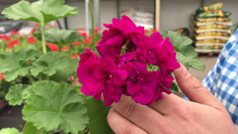
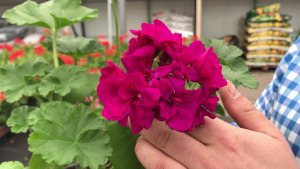
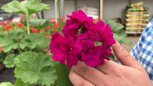
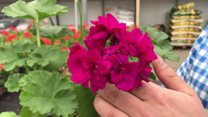
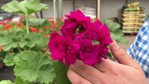

Composición del jardin
Durante la primavera veremos florecer las azucenas
, los claveles
, y los humildes geranios. 
 , los
claveles
, los
claveles  , y los humildes
geranios. , los
claveles , y los humildes
geranios. 
, y los humildes
geranios. , los
claveles , y los humildes
geranios. 